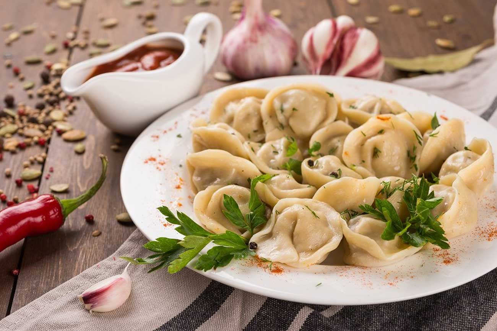

Как варить пельмени
1. Налить в кастрюлю воду (на 1 порцию 15-20 пельменей — половина литра воды), поставить кастрюлю на сильный огонь.
2. Добавить в воду чёрный перецец молотый, чтобы не пришлось вылавливать горошек в мутном бульоне.
3. Дождаться закипания воды.
4. Выложить замороженные пельмени в кастрюлю.
5. После того, как вода снова закипит, уменьшить огонь и перемешать пельмени, чтобы они не слиплись между собой и не прилипли к дну и стенкам кастрюли.
6. Варить пельмени 10 минут, выловить пельмени из воды с помощью шумовки или столовой ложки.
7. Подавать пельмени со сметаной и пельменным бульоном, по вкусу посыпав зеленью.

